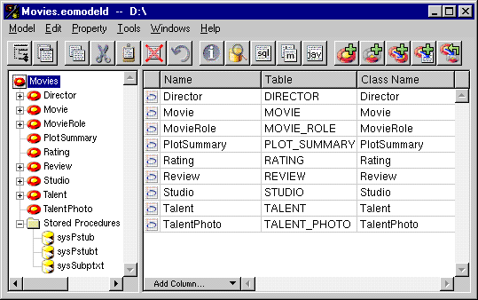

Table of Contents
Table of Contents  Next Section
Table of Contents
Next Section
Table of Contents  Previous Section
Previous Section

Figure 34. Displaying an Entity's Attributes
Each table column corresponds to a single characteristic of an entity, such as its name or the name of its database table. By default, the columns included in the table-Open Entity, Name, Table, and Class Name-only represent a subset of the possible characteristics you can set for a given entity. To add columns for additional characteristics, you use the Add Column menu in the lower left corner of the table.
The following table describes the characteristics you can set for an entity in the Model Editor.
Note: There are numerous other characteristics that you set using the Entity Inspectors
Table of Contents Next Section